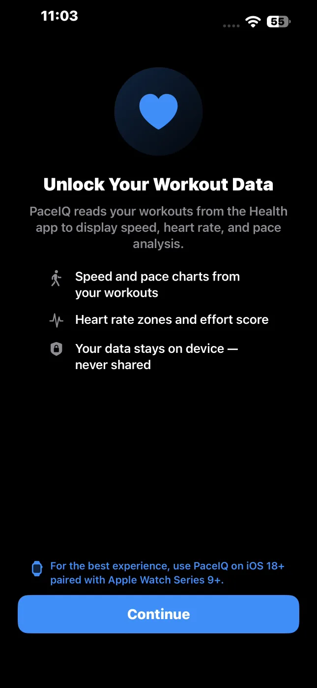
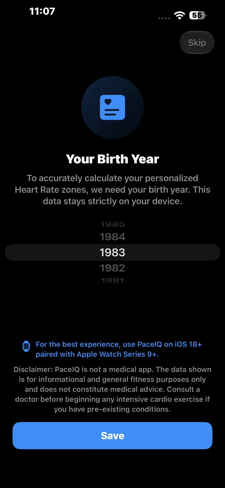

Complete the first-launch setup
The first time you open PaceIQ, it asks for access to Apple Health and for your birth year. Allow access and enter your birth year. Your age sets your heart-rate zones and your effort ceiling, and Health access lets PaceIQ use your own resting heart rate and weight, so every analysis is calculated for you personally.



